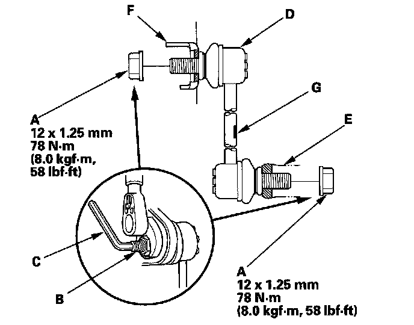

Front Suspension
Stabilizer Link Removal/Installation1. Raise the front of the vehicle, and support it with safety stands in the proper locations.
2. Remove the front wheel.
3. Remove the flange nuts (A) while holding the respective joint pin (B) with a hex wrench (C) then remove the stabilizer link (D).

4. Install the stabilizer link on the stabilizer bar (E) and the damper (F) with the joint pins set at the center of their range of movement.
NOTE: The stabilizer link has a paint mark (G). Align the stabilizer link with the paint mark facing inward.
5. Install the flange nuts, and lightly tighten them.
6. Clean the mating surface of the brake disc and the inside of the wheel, then install the front wheel.
7. Tighten the flange nuts to the specified torque values while holding the respective joint pin with a hex wrench.
8. Test-drive the vehicle.